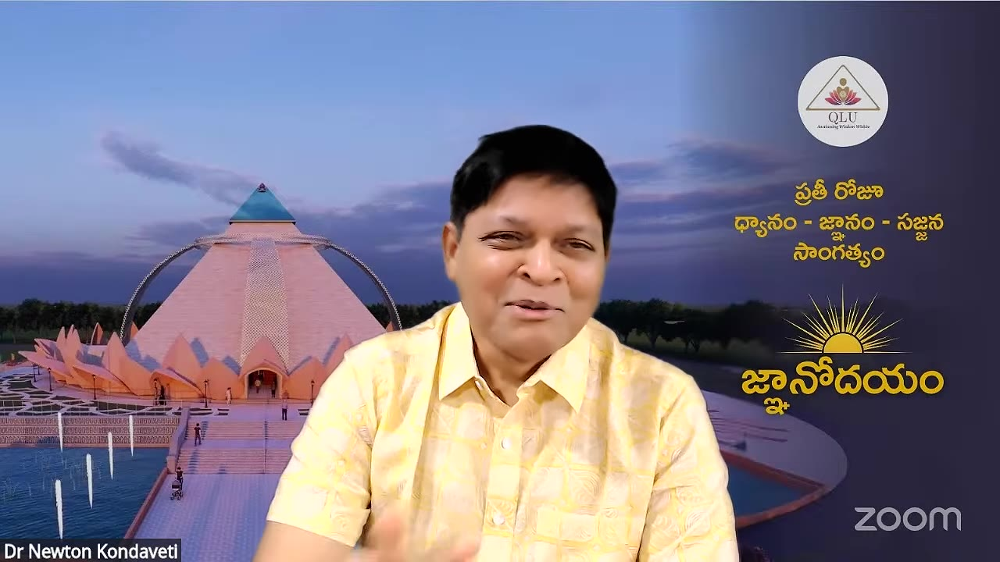

01 · ఈ నెల ఆధ్యాత్మిక జ్ఞానసారం · పూర్తి కథనం
కారణం, ప్రతీకల అంతరార్థం — నూతన చైతన్యంతో నవజన్మ వైపు
దేవీ నవరాత్రుల నాలుగవ రోజు Dr. Newton బోధనలో రంభ–కరంభుల కథ ద్వారా మనలోని ఐహిక వాంఛలు, ముక్తికోసం చేసే సాధన మధ్య సంఘర్షణను పరిశీలిస్తారు. మనసు, మాయ, వాసనలు, సంస్కారాల గురించి కథలతో వివరిస్తూ, ఆధ్యాత్మిక నూతన జన్మకు దారితీసే ఎరుకను గుర్తుచేస్తారు. చివరగా దేవీ సమర్పణలోని అంతరార్థాన్ని వివరిస్తారు.
కారణం · సంకేతం · నూతన జన్మ
దేవీ నవరాత్రుల నాలుగవ రోజు Dr. Newton బోధనలో రంభ–కరంభుల కథ ద్వారా మనలోని ఐహిక వాంఛలు, ముక్తికోసం చేసే సాధన మధ్య సంఘర్షణను పరిశీలిస్తారు. మనసు, మాయ, వాసనలు, సంస్కారాల గురించి కథలతో వివరిస్తూ, ఆధ్యాత్మిక నూతన జన్మకు దారితీసే ఎరుకను గుర్తుచేస్తారు. చివరగా దేవీ సమర్పణలోని అంతరార్థాన్ని వివరిస్తారు.
నవరాత్రుల వేడుక — జ్ఞానాన్ని అనుభవంలోకి తీసుకురావడం
జ్ఞానోదయం శుభోదయం, మై డియర్ ఫ్రెండ్స్! దేవీ నవరాత్రులను మనం చక్కగా సెలబ్రేట్ చేసుకుంటున్నాం. ప్రతిరోజూ ఒక గొప్ప స్థితిని తెలుసుకుంటూ, ఆ స్థితిని అనుభూతి చెందుతూ వేడుక చేసుకుందాం. ఈ రోజు నాలుగవ రోజు. జగన్మాత, ఆదిశక్తి, పరాశక్తి — ఎన్నో పేర్లతో, ఎన్నో రూపాలతో మనం ఆరాధించే ఆ శక్తి గురించి మరింత లోతుగా తెలుసుకుందాం.
ఈ సృష్టిలో ప్రతి కార్యానికి ఒక కారణం ఉంటుంది. మన జన్మకు ఒక కారణం ఉంది. ఈ సృష్టి వెనుక కూడా ఒక కారణం ఉంది. పురాణాల్లో ఒక దేవత ఉద్భవించినా, ఒక అసురుడు జన్మించినా, ఆ కథ వెనుక ఒక నేపథ్యం ఉంటుంది. ఆ నేపథ్యాన్ని తెలుసుకోకుండా కథలోని అంతరార్థాన్ని పూర్తిగా గ్రహించలేం.
మన మహర్షులు పండుగల ద్వారా సాధన రహస్యాలను, ఆధ్యాత్మిక మెలకువలను సంకేతాల రూపంలో అందించారు. కథను కేవలం కథగా విని మరిచిపోతే పండుగ ముగిసిన వెంటనే మళ్లీ పాత జీవనశైలికే వెళ్లిపోతాం. ఆ కథ మనలో ఏ మార్పు తీసుకురావాలో తెలుసుకున్నప్పుడే పండుగ నిజమైన ఆధ్యాత్మిక వేడుక అవుతుంది.
తల్లి గర్భంలో తొమ్మిది నెలలు గడిపి శిశువు కొత్తగా జన్మించినట్లే, ఈ తొమ్మిది రాత్రులను మనలోని పరాశక్తిని తెలుసుకునే ఒక నూతన జన్మకు ప్రతీకగా తీసుకుందాం. మహిషాసురుడి ఉద్భవానికి సంబంధించిన కథను కూడా ఇదే దృష్టితో పరిశీలిద్దాం.
రంభుడు, కరంభుడు — మనలోని రెండు ఆకాంక్షలు
రంభుడు, కరంభుడు అనే ఇద్దరు సోదరుల కథను గుర్తుచేసుకుందాం. ఈ కథలో ఇద్దరి తపస్సు రెండు వేర్వేరు అంతరంగ స్థితులకు సంకేతంగా కనిపిస్తుంది.
రంభుడి స్థితి — ఐహిక వాంఛలు. ఈ స్థూల ప్రపంచంలో ఇది కావాలి, అది కావాలి, అనుకున్నది అనుకున్నట్లే జరగాలి అనే కోరికలు మనసులో నిరంతరం పుడుతుంటాయి. ఏదైనా జరగకపోతే బాధపడతాం; ఎవరైనా తిరస్కరిస్తే కోపం, దుఃఖం, నిరాశ కలగవచ్చు. ఈ స్థితిలో మన శక్తి ఎక్కువగా బయట పరిస్థితుల చుట్టూ తిరుగుతుంది.
కథలో రంభుడు నీటి మడుగులో తపస్సు చేస్తున్నాడని చెబుతారు. నీటిని ఇక్కడ మాయకు, భావోద్వేగాల లోతుకు ప్రతీకగా అర్థం చేసుకుందాం. సముద్రం పైకి నీళ్లుగానే కనిపిస్తుంది; లోపల ఎన్నో రహస్యాలు ఉంటాయి. అలాగే మనకు కనిపించే ప్రపంచమే సంపూర్ణ సత్యమని అనిపించవచ్చు. ఇతరుల మాటలే మన దుఃఖానికి కారణమని నమ్మవచ్చు. అయితే మన స్పందనలను, మనసులోని వాసనలను పరిశీలించకుండా ఆ దుఃఖాన్ని పూర్తిగా అర్థం చేసుకోలేం.
కరంభుడి స్థితి — మాయలో చిక్కుకోకుండా సాధన చేయాలనే సంకల్పం. కథలో అతడు పంచాగ్నుల మధ్య, వటవృక్షం కింద తపస్సు చేస్తున్నట్లు వర్ణిస్తారు. పంచాగ్నులను మన పంచజ్ఞానేంద్రియాలకు సంకేతంగా పరిశీలిద్దాం. కళ్ళు, చెవులు, ముక్కు, నాలుక, చర్మం — ఇవి మన దృష్టిని ఎప్పటికప్పుడు బాహ్య ప్రపంచం వైపు తీసుకెళ్తుంటాయి. ఆ ఆకర్షణల మధ్య కూడా అంతర్ముఖంగా నిలబడటమే సాధనలోని సవాలు.
ఇద్దరు సోదరులను కేవలం బయట ఉన్న ఇద్దరు వ్యక్తులుగా చూడకండి. ఒకవైపు భౌతిక జీవన అవసరాలు, సుఖాలు; మరోవైపు ఆత్మజ్ఞానం, మోక్షం కోసం చేసే సాధన — ఈ రెండు ఆకాంక్షలూ మనలోనే ఉంటాయి. మన వృత్తిని, కుటుంబ బాధ్యతలను నిర్వర్తించాలి. అయితే వాటిలోనే పూర్తిగా మునిగిపోయి మన జీవిత ధ్యేయాన్ని మరచిపోకూడదు.
ఇంద్రుడు, మొసలి — సాధనకు అడ్డుపడే మనసు
కథలో ఇంద్రుడు మొసలి రూపంలో వచ్చి రంభుడిని నీటిలోకి లాగినట్లు చెబుతారు. దీన్ని మనసుకు సంబంధించిన సంకేతంగా పరిశీలిద్దాం. ఇంద్రియాలకు అధిపతిగా చెప్పబడే ఇంద్రుడిని ఇక్కడ మనసుకు ప్రతీకగా తీసుకుంటున్నాం.
ధ్యానానికి కూర్చున్న వెంటనే ఎన్ని ఆలోచనలు వస్తాయో గమనించండి. గతంలో ఎవరో ఏమన్నారు, మనకు ఎందుకు అలా జరిగింది, రేపు ఏమవుతుంది — మనసు ఎన్నో దిశల్లోకి తీసుకెళ్తుంది. శ్వాసపై ధ్యాస నిలిపి, చిత్తవృత్తులను శాంతింపజేయడానికి ప్రయత్నిస్తున్నప్పుడు కూడా అదే మనసు మనల్ని బయటికి లాగుతుంది.
రంభుడిని మొసలి లాగడం అంటే, మాయలో చిక్కుకున్న మనసు సాధనను ఎలా అడ్డుకుంటుందో తెలియజేసే ప్రతీకగా చూడవచ్చు. ఈ కథను అర్థం చేసుకున్న తర్వాత మనం ఎవరితో పోరాడాలో స్పష్టమవుతుంది: బయట మనుషులతో కాదు; మనలోని అవివేకం, అలవాటైన ప్రతిస్పందనలు, అనవసరమైన ఆలోచనలతో.
కరంభుడి కథలో తలనే అగ్నికి అర్పించడం అనే ఘట్టం వస్తుంది. ఇది శారీరక హింసను అనుసరించాలనే సూచన కాదు. శిరస్సును సమర్పించడం అంటే మనసు, అహంకారాన్ని విడిచిపెట్టే ఆధ్యాత్మిక ప్రతీకగా ప్రసంగంలో వివరించబడింది. ఈ ప్రతీకను తదుపరి భాగంలో అగ్ని, సత్యం, ‘పుత్ర’ అనే పదానికి ఇచ్చిన ఆధ్యాత్మిక వ్యాఖ్యానంతో కలిపి పరిశీలించాలి.
జీవితానికి స్పష్టత — సంసారం, నిర్వాణం మధ్య గందరగోళం
మై డియర్ ఫ్రెండ్స్! మనకు ఈ జన్మ ఎందుకు వచ్చింది? మనం ఏం చేయడానికి వచ్చాం? ఈ ప్రశ్నకు స్పష్టమైన సమాధానం లేకపోతే, జీవితం ఒక దిశ లేకుండా సాగిపోతుంది. పుట్టినప్పటి నుంచి చదువు, ఉద్యోగం, కుటుంబం, సంపాదన — ఇవన్నీ ముఖ్యమే. ఈ భౌతిక ప్రపంచంలో జీవించాలంటే మన వృత్తిధర్మాన్ని, కుటుంబ బాధ్యతలను నిర్వర్తించాలి. కానీ జీవించడానికి అవసరమైన పనులే మన జీవితపు సంపూర్ణ ధ్యేయమని భావించకూడదు.
చిన్నప్పటి నుంచే పిల్లలు ఏం కావాలో పెద్దలు నిర్ణయించేస్తుంటారు. ‘నా కొడుకు డాక్టర్ కావాలి’, ‘నా కూతురు సైంటిస్ట్ కావాలి’ అంటుంటాం. కొన్నిసార్లు మనం సాధించలేకపోయిన కలలను పిల్లల ద్వారా సాధించాలనుకుంటాం. పిల్లలు తమ జీవిత దిశను తాము తెలుసుకునే అవకాశాన్ని కోల్పోవచ్చు. ధ్యానంలో మనల్ని మనం పరిశీలించుకున్నప్పుడు మన అసలు ఆకాంక్షలు ఏమిటో స్పష్టత వస్తుంది.
రంభుడు, కరంభుడు అనే ఇద్దరు సోదరుల కథలో ఈ ద్వంద్వాన్ని చూడండి. ఒకవైపు సంసారం — భౌతిక జీవితంలోని అవసరాలు, సుఖాలు, కోరికలు; మరోవైపు నిర్వాణం — దుఃఖరాహిత్యం, ఆత్మజ్ఞానం, ముక్తి కోసం చేసే సాధన. ఈ రెండు కోరికలు మనలోనే ఉంటాయి. ఒక దిశగా వెళ్తే మరో దిశను కోల్పోతున్నామేమో అని సందేహం కలుగుతుంది.
అందుకని కుటుంబాన్ని వదిలేస్తేనే ఆధ్యాత్మికత వస్తుందని అనుకోవద్దు. సంసారాన్ని పూర్తిగా తిరస్కరించి, కుటుంబ బాధ్యతలను విస్మరించి, ఆ తరువాత నిర్వాణంలోనూ స్థిరపడలేకపోతే రెండింటిలోనూ అసంతృప్తి మిగులుతుంది. సంసారంలో బాధ్యతతో ఉండి, అంతరంగంలో స్వేచ్ఛను పెంపొందించుకోవడం సాధనలో ముఖ్యమైన పాఠం.
పుత్రుడు, ద్విజుడు — కొత్త జన్మకు ఇచ్చిన ఆధ్యాత్మిక అర్థం
కరంభుడి తపస్సులో శిరస్సును అగ్నికి సమర్పించే సంకేతాన్ని చూశాం. దాన్ని శారీరకంగా అనుకరించాలనే అర్థంలో కాదు; మనసు, అహంకారాన్ని విడిచిపెట్టి ఆత్మతత్త్వం వైపు వెళ్లే సంకేతంగా అర్థం చేసుకోవాలి. మనసు శాంతించినప్పుడు మనలో నుంచే ఒక స్పష్టత, ఒక ప్రబోధం కలుగుతుందని ఈ కథ ద్వారా వివరించాం.
కథలో కరంభుడు ‘పుత్రుడు’ కావాలని కోరుకుంటాడు. ఈ పదాన్ని ప్రవచనంలో జననమరణ చక్రాల నుంచి బయటపడాలనే ఆకాంక్షతో అనుసంధానించి ఆధ్యాత్మిక వ్యాఖ్యానం చేశారు. ‘ద్విజుడు’ అనే భావాన్ని కూడా మొదటి జన్మ తర్వాత జ్ఞానంతో కలిగే మరో జన్మగా పరిశీలించవచ్చు. ఈ వ్యాఖ్యానాలను ప్రామాణిక పదవ్యుత్పత్తులుగా కాకుండా ప్రసంగంలోని ప్రతీకాత్మక అర్థాలుగా చూడాలి.
మనకు నిజమైన నూతన జన్మ ఎప్పుడు? మనం పాత అలవాట్లతోనే జీవిస్తూ, పాత ఆలోచనలతోనే స్పందిస్తూ ఉంటే తేదీ మారినంత మాత్రాన కొత్త జీవితం ప్రారంభం కాదు. మన అసలు స్వరూపాన్ని తెలుసుకునే దిశగా మన దృష్టి మారినప్పుడే ఆధ్యాత్మిక నూతన జన్మ ప్రారంభమవుతుంది.
హల్వా ఉదాహరణ — అణచిపెట్టిన కోరికలు ఎక్కడికి పోతాయి?
ఒకరికి హల్వా అంటే ఎంతో ఇష్టం అనుకుందాం. ఒకరోజు ‘నేను సన్యాసం తీసుకున్నాను, ఇక హల్వా తినను’ అని నిర్ణయించుకున్నారు. కానీ ధ్యానానికి కూర్చున్న వెంటనే మనసులో హల్వా గుర్తుకొస్తోంది. బయటికి తిరస్కరించిన కోరిక లోపల మాత్రం అలాగే ఉంది.
కోరికను అణచిపెట్టడం, దాని నుంచి నిజంగా స్వేచ్ఛ పొందడం — రెండూ ఒకటి కాదు. మనం ఏదైనా విషయాన్ని బలవంతంగా బయటకు నెట్టేస్తే, అది మనసులో మరింత ఆకర్షణగా తిరిగి కనిపించవచ్చు. అందుకే మన వాసనలను, మనసు పనిచేసే విధానాన్ని ఎరుకతో గమనించాలి.
సంసారంలో తామరాకు మీద నీటి బొట్టులా జీవించాలనే ఉపమానం ఇక్కడ ఉపయోగపడుతుంది. నీటి బొట్టు ఆకుపై ఉంటుంది; కానీ దానికి అంటుకుని ఉండదు. అలాగే కుటుంబంతో, సమాజంతో, పనులతో అనుబంధం ఉండాలి. వాటిలో పూర్తిగా చిక్కుకుని మన అంతరంగ స్వేచ్ఛను కోల్పోకూడదు.
రమణ మహర్షి కథ — మన ఆనందాన్ని దోచే దొంగ ఎవరు?
రమణాశ్రమంలో దొంగలు ప్రవేశించిన ఒక సంఘటనను ప్రవచనంలో ఉదాహరణగా చెప్పారు. ఆశ్రమంలో జరిగినదాన్ని చూసి కొందరు శిష్యులు ఆగ్రహంతో స్పందించారు. కానీ రమణ మహర్షి మౌనంగా ఉన్నారని, మన ఆనందాన్ని దోచుకునే అతిపెద్ద దొంగ మనసే అనే బోధనను ఈ సంఘటనతో అనుసంధానించారు.
మనకు ఎవరో ఏదో అన్నారు. వెంటనే మనసులో కోపం మొదలవుతుంది. ‘అతడు అలా ఎందుకు అన్నాడు?’, ‘నన్ను ఎందుకు అవమానించాడు?’ అని ఆలోచిస్తూ గంటల తరబడి బాధపడతాం. బయట జరిగిన సంఘటన ఒక్కటే; కానీ దానిపై మనసు నిర్మించిన కథ ఎన్నో రెట్లు పెద్దదవుతుంది.
ఇక్కడ మనం నేర్చుకోవాల్సింది బయట జరిగిన అన్యాయాన్ని అంగీకరించి మౌనంగా ఉండాలి అనేది కాదు. అవసరమైన చర్య తీసుకుంటూనే, మన అంతరంగంలో కోపం, బాధ, ప్రతీకారం ఎలా పెరుగుతున్నాయో గమనించాలి. మన స్పందనకు మనమే బాధ్యత తీసుకోవాలి.
సాధనలో ప్రశ్న: ఈ క్షణం నా శాంతిని దోచుకుంటున్నది బయట సంఘటనా? లేక ఆ సంఘటన గురించి నా మనసు మళ్లీ మళ్లీ నిర్మిస్తున్న ఆలోచనలా?
వాసనలు, సంస్కారాలు — మురికి వస్త్రం ఉదాహరణ
ఒక మురికి వస్త్రాన్ని శుభ్రం చేయాలని ఒక సిద్ధపురుషుడు సూచించిన కథను చూద్దాం. మొదట వస్త్రాన్ని ఉతికినప్పుడు పైకి కనిపించే మురికి పోయింది. కానీ దుర్వాసన అలాగే ఉంది. మళ్లీ మరింత శ్రద్ధగా ఉతికిన తరువాతే ఆ వాసన తగ్గింది.
మనలోని సంస్కారాలు, వాసనలు కూడా అలాగే ఉంటాయని ఈ కథ ద్వారా వివరించాం. కొన్ని అలవాట్లు పైకి తగ్గిపోయినట్లు కనిపిస్తాయి. కానీ వాటి ముద్రలు మన స్పందనల్లో మళ్లీ బయటపడవచ్చు. కోపం తగ్గిందనుకుంటాం; మరొక సందర్భంలో మళ్లీ అదే కోపం వస్తుంది. అహంకారం పోయిందనుకుంటాం; ఎవరైనా విమర్శిస్తే మళ్లీ బాధపడతాం.
అందుకే ఒక్కరోజు ధ్యానం చేసి ‘ఇక అన్నీ తొలగిపోయాయి’ అనుకోకూడదు. నిరంతర ఎరుక, సాధన, అంతరశుద్ధి అవసరం. మనలోని తమోగుణ, రజోగుణ ప్రవృత్తులను గమనించి వాటి ప్రభావాన్ని తగ్గించుకోవాలి.
మన ఇంటి పెరట్లోనే ఉన్న బంగారు గని
ఒక వ్యక్తి పేదరికంలో జీవిస్తున్నాడు. ఒక సిద్ధపురుషుడు అతనికి ‘నీ ఇంటి పెరట్లోనే గొప్ప నిధి ఉంది; తవ్వి చూడు’ అని చెప్పాడు. కానీ అతడు నమ్మలేదు. తన జీవితాన్ని పేదరికంలోనే గడిపాడు. తరువాత ఆ ఇంటికి వచ్చిన మరొకరు ఆ సూచనను నమ్మి తవ్వగా నిధి దొరికిందనే కథను ప్రవచనంలో చెప్పారు.
ఈ కథలోని బంగారు గని మనలోనే ఉన్న శక్తికి, జ్ఞానానికి ప్రతీక. బయట ఎక్కడో వెతుకుతూ మనలో ఉన్న సంపదను గుర్తించకపోవచ్చు. గురువులు ‘లోపలికి వెళ్లి తెలుసుకోండి’ అని చెప్పినా, మనం నమ్మకపోవచ్చు. సాధన చేయకుండా ఆ నిధిని అనుభవంలోకి తీసుకురాలేం.
మనలోని ఆదిశక్తిని గుర్తించడానికి మనమే సాధన చేయాలి. ఆ శక్తిని తెలుసుకున్నప్పుడు అంతరశత్రువులను ఎదుర్కొనే ధైర్యం, స్పష్టత పెరుగుతాయి.
దోమ, ఏనుగు — మనం ఎవరమని భావిస్తున్నాం?
మరొక కథలో ఒక ఏనుగుపై దోమ వాలింది. కొంతసేపటికి దోమ వెళ్లిపోతూ ‘నా వల్ల మీకు ఇబ్బంది కలిగిందేమో, క్షమించండి’ అన్నట్లుగా చెబుతుంది. ఏనుగు మాత్రం ‘నువ్వు నా మీద ఉన్నావన్న విషయం కూడా నాకు తెలియదు’ అని సమాధానం ఇచ్చినట్లు కథ సాగుతుంది.
ఈ ఉపమానంలో దోమ చిన్నదైన, తన గురించే ఆలోచించే పరిమిత భావనకు సంకేతం. ఏనుగు విశాలమైన, బలమైన ఆత్మతత్త్వానికి సంకేతం. మనం చిన్న చిన్న సంఘటనలకు కదిలిపోయే స్థితిలో ఉండాలా? లేక మన అసలు స్వరూపాన్ని గుర్తించి విశాలమైన దృష్టితో జీవించాలా?
మన జీవితంలో ఎన్నో చిన్న చిన్న సంఘటనలు జరుగుతాయి. వాటిని మన అహంకారానికి పెద్ద దెబ్బలుగా భావిస్తే దుఃఖం పెరుగుతుంది. ఆత్మస్వరూపాన్ని గుర్తుంచుకుంటే ప్రతి విషయానికీ మన అంతరంగం కదిలిపోవలసిన అవసరం ఉండదు.
ఈ రోజు సాధన — దేవీ సమర్పణ
ఈ రోజు ప్రవచనాన్ని ముగించే ముందు దేవీ సమర్పణ సాధనను మళ్లీ గుర్తుచేశారు. ఎడమ చేతికి, ఎడమ కాలికి ప్రాధాన్యం ఇచ్చే లక్ష్మీముద్ర భావం; కుడి నాసికారంధ్రాన్ని సున్నితంగా మూసి ఎడమ నాసికారంధ్రం ద్వారా విడతలుగా శ్వాస తీసుకోవడం; నమస్కారముద్రలో శిరస్సును వంచడం; మనసులో ‘శ్రీం’ అనే బీజాక్షరాన్ని స్మరించడం — ఇవన్నీ ప్రదర్శనలో ఉన్నాయి. తొమ్మిది చక్రాలు చేయాలని సూచించారు.
అయితే ఈ సాధనలోని ప్రధానమైనది శ్వాసను బలవంతంగా నియంత్రించడం కాదు; అహంకారాన్ని సమర్పించడం. జగన్మాత, ఆదిశక్తి, పరాశక్తి సాన్నిధ్యాన్ని గుర్తుచేసుకుంటూ మనసును శాంతింపజేయడం ముఖ్యమైనది.
ఈ రోజు జ్ఞానం — మన జీవితంలో ఆచరణ
మనలోనే సంసారం, నిర్వాణం అనే రెండు ఆకాంక్షలు ఉన్నాయి. బాధ్యతలను వదిలేయకుండా అంతర్ముఖంగా ఎదగాలి. కోరికలను అణచిపెట్టకుండా వాటి స్వభావాన్ని గమనించాలి. మనసు మన ఆనందాన్ని ఎలా దోచుకుంటుందో తెలుసుకోవాలి. వాసనలు, సంస్కారాలను నిరంతర సాధనతో పరిశీలించాలి. మనలోనే ఉన్న బంగారు గనిలాంటి ఆత్మశక్తిని గుర్తించాలి. జగన్మాతకు అహంకారాన్ని సమర్పించి, ఎరుకతో జీవించాలి.